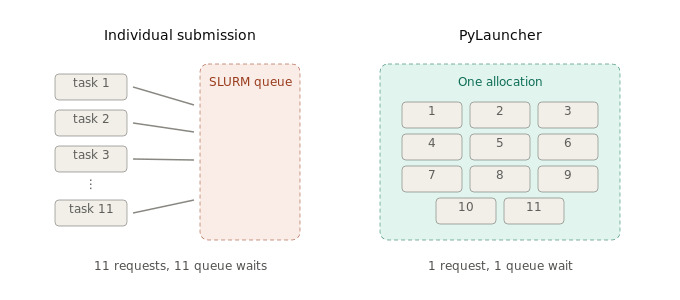
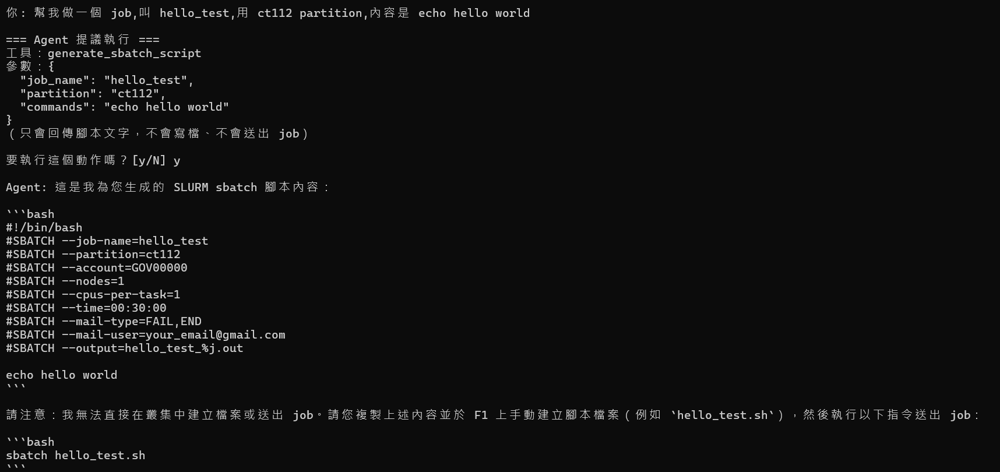
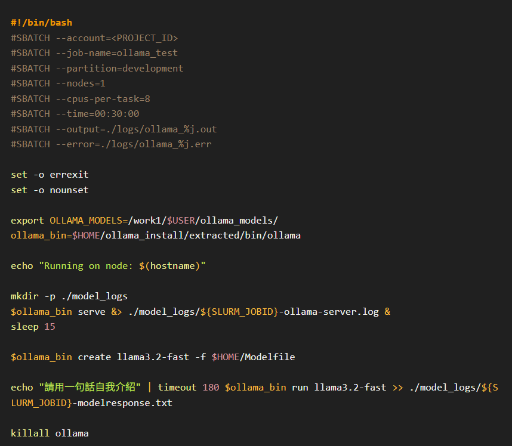
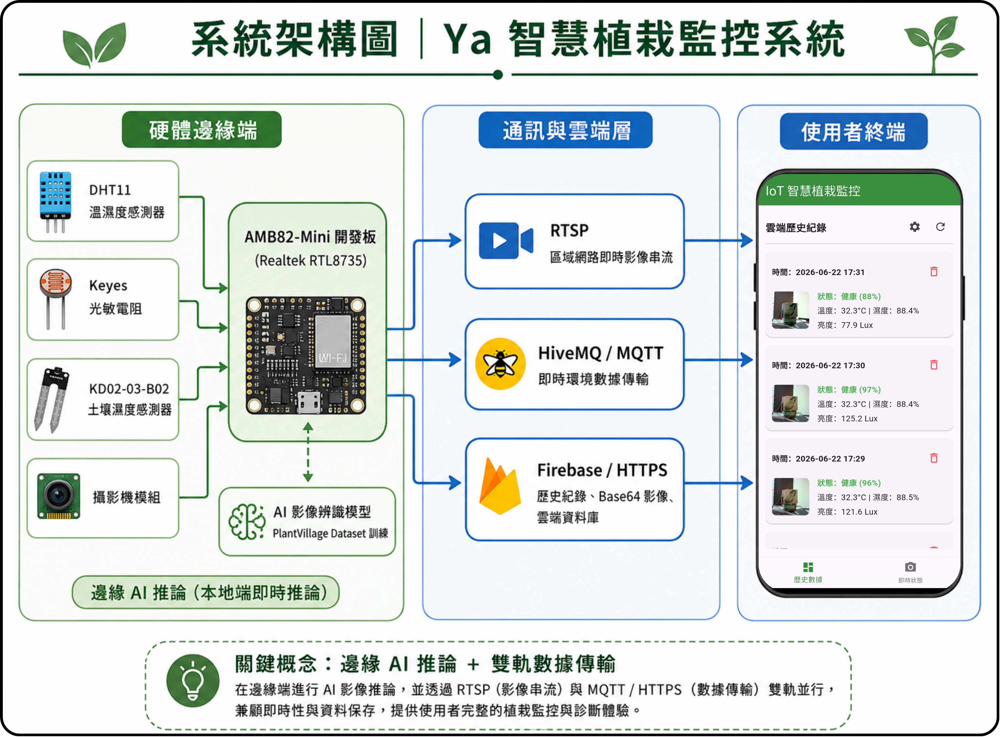
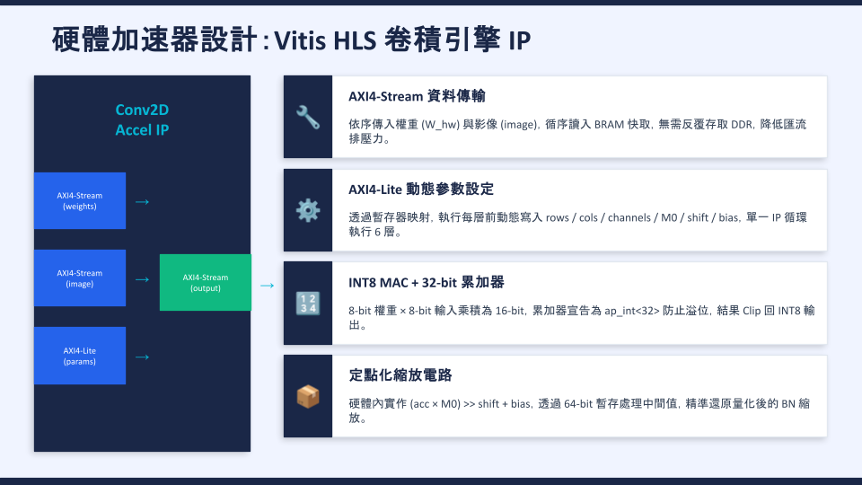
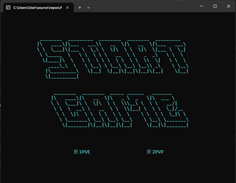
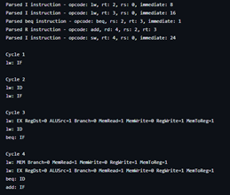

Portfolio
Projects

PocketDefender — 輕量化 Deepfake 偵測系統
- 提出 MobileNetV3-Large + GRU 輕量化時序架構，結合 Res2Net-AFF 音訊模型進行影音多模態特徵融合
- 透過 TFLite Post-Training Quantization，模型體積壓縮超過 72%，量化後仍維持穩定的辨識表現
- 開發 Flutter Android 行動端即時偵測系統，支援全機離線運作，影音不需上傳雲端
- 獲 2026 Best AI Awards 佳作、2025 全國 AI 競賽資電組第一名、InnoServe 資安技術組佳作
PythonTensorFlow LiteMobileNetV3
GRURes2NetPTQ
FlutterEdge AI
Deepfake 偵測 Chrome Extension（TensorFlow.js）
- 將 PocketDefender 的偵測模型延伸到瀏覽器端，讓使用者不必安裝 App 也能直接檢查網頁上的影片
- 以 TensorFlow.js 完成模型轉換與瀏覽器內推論，推論同樣在本機端完成，不上傳任何影音
- 處理轉換過程的兩個關鍵問題：
pixel-interleaved張量排列與原本錯誤的 sigmoid 輸出處理，修正後推論結果才與 Python 端一致 - 與 Flutter App 共用同一套模型與前處理流程，形成行動端 + 瀏覽器端的雙部署形態
TensorFlow.jsJavaScriptChrome Extension
Model ConversionOn-device Inference

images/pylauncher_poster.png'">PyLauncher on Forerunner1 — 大量參數掃描的排程開銷優化
技術文件（Notion）- 於 F1 叢集部署 PyLauncher，將參數掃描產生的大量獨立小型工作打包進單一 SLURM allocation，把 11 次 job 提交降為 1 次
- 直接閱讀原始碼，找出官方文件與 pip 版本（v4.0）間的四項未記載落差，包含不會拋出錯誤的靜默失敗：預設主機偵測邏輯僅比對 TACC 專屬主機名稱，在非 TACC 叢集上會退化為單節點執行
- 改以 SLURMHostList 手動組裝 LauncherJob 繞過該問題，並以
cores=<實體核心數>維持每個任務的節點獨佔性；雙節點實測 dispatch speedup 達 1.99×（理論上限 2.0×），與逐一提交基準的逐點誤差平均僅 3.1% - 將 conda 環境封裝為自訂 Lmod module，解決非互動式 shell 中
conda activate初始化失效的問題，並撰寫完整部署指南
PyLauncherSLURMPython
LmodSingularityHPC

images/slurm_agent.png'">SLURM Job Agent — HPC 排程輔助 CLI Agent
github.com/Guanisnt/Slurm_Sbatch_Agent- 命令列 LLM Agent，將自然語言需求轉換為可直接複製使用的 SLURM sbatch 腳本
- 採刻意收斂的 Co-pilot 設計：Agent 僅能產生腳本文字與讀取佇列狀態，程式中不存在寫檔、呼叫 sbatch 或送出工作的路徑
- Human-in-the-loop 機制，每個 tool call 執行前完整列出參數，未經同意不執行
- 分區白名單、核心數上限、時間格式等叢集限制以 Python 獨立驗證，不依賴模型判斷；帳號憑證僅存於本機設定檔，不進入 Prompt
PythonGemini APIFunction Calling
SLURMLLM AgentMIT License

images/ollama_slurm_job.png'">Ollama on Slurm — HPC 叢集部署最佳實踐指南
- 針對使用者直接於 login node 執行 Ollama server 造成的資安疑慮與資源競爭，撰寫進階部署指南，將服務隔離至配置的運算節點
- Batch Mode：將 Ollama server 啟動與指定 prompt 一併嵌入 SLURM job script，於背景自動完成推論
- Interactive API Mode：以 SLURM job 啟動常駐服務，使用者透過 CLI API 呼叫即時與 LLM 互動
- 文件化兩種流程，引導叢集使用者建立 HPC 資源排程最佳實踐並強化環境資安
OllamaSLURMHPC
BashLLM Deployment

images/amb82-plant.jpg'">植物葉片健康分類 IoT 系統 — AMB82-Mini (HUB8735) NPU 部署
- 在 AMB82-Mini（HUB8735）邊緣開發板上建置端到端的植物病害辨識系統，影像擷取、推論與回報全部在板端完成
- 以 PlantVillage 資料集自行訓練客製化 CNN 分類模型，針對開發板的運算與記憶體限制調整網路規模
- 透過 Realtek Acuity Toolkit 完成 Post-Training Quantization 與 NPU 部署，將模型轉換為板端可執行的格式
- 整合 RTSP 影像串流、MQTT（HiveMQ Cloud）訊息傳遞與 Firebase 資料回寫，串成完整的 IoT 資料鏈路
- 排除模型輸出恆為定值的問題：先定位到量化校準（calibration）資料的取樣方式，後續再追到 sketch 整合層的呼叫錯誤，逐層驗證後恢復正常輸出
AMB82-MiniRealtek AcuityNPU
PTQCNNRTSP
MQTT / HiveMQFirebase

images/fpga-conv-accel.jpg'">conv_accel — FPGA / HLS 卷積運算加速器
- 以 High-Level Synthesis（HLS）設計卷積運算加速器
conv_accel，將 CNN 中最吃運算量的卷積層下放到硬體執行 - 部署於 PYNQ 開發板，透過 Python / Jupyter 介面驅動硬體加速核心，與純軟體實作對照驗證運算結果與效能
- 實作過程涵蓋資料流設計、迴圈展開與管線化等 HLS 最佳化手法，以及硬體資源使用量與吞吐之間的取捨
- 與模型量化的經驗互補，形成「演算法端壓縮 → NPU 部署 → RTL 層加速」的完整 Edge AI 視角
FPGAVitis HLSPYNQ
C / C++Hardware Acceleration

images/asm-air-hockey.png'">Air Hockey — x86 組合語言桌上曲棍球遊戲
- 以 Irvine32 Assembly Library 開發終端機文字介面遊戲，支援雙人對戰與人機對戰兩種模式，遊戲畫面直接輸出於 terminal
- 負責遊戲初始化、game loop 邏輯、畫面 update 與 input handle 的設計與實作
- 熟悉 general-purpose register 與 status flag 的操作，並運用直接、間接、base + offset 等定址方式讀寫記憶體，設計 procedure 讓程式架構更加模組化
- 最具挑戰的部分是讓球以斜角移動並正確反彈：組合語言不像高階語言方便處理向量運算，改以 XOR 邏輯切換 x、y 方向的移動增量，實現對角線彈射效果
x86 AssemblyIrvine32MASM
Terminal GameLow-level Programming

images/mips-pipeline-sim.png'">MIPS 5-Stage Pipelined CPU 模擬器
github.com/Guanisnt/repo名稱- 以 C++ 實作 5 段管線（IF、ID、EX、MEM、WB）的 MIPS CPU 模擬器，完整模擬指令在各階段間的執行流程
- 將每個管線階段封裝為獨立 class，並以 IF/ID、ID/EX 等中介暫存器實現階段間資料傳遞，讓指令能於每個 clock 同步推進
- 實作 data hazard 偵測與解決機制，包含 forwarding 與 stall 策略，並處理 branch 指令造成的 control hazard，確保 pipeline 執行結果正確
- 支援 add、sub、lw、sw、beq、bne 等常見 MIPS 指令，可載入程式並逐 clock 觀察暫存器與記憶體內容的更新，加深對電腦組織與架構、hazard 處理與 pipeline 效能平衡設計 trade-off 的理解
C++MIPS ISAComputer Architecture
Pipeline HazardForwarding

激發學生創意競賽管理系統
設計並開發高雄大學創意競賽管理系統，涵蓋報名、評分與公告發布。擔任後端主開發者（Spring Boot + MySQL），撰寫 RESTful API；v2 版擔任主席主持需求會議、撰寫 SRS / SDD，前端改用 Flutter Web + PHP + MariaDB，並負責 Figma UI 設計。
Spring BootMySQLFlutter
PHPRESTful APIFigma

GAMEBALL — Java 多人連線遊戲
github.com/Guanisnt/Java_Network_Programming_final以 Java Swing 打造 GUI，採 Client–Server 架構與 Socket Programming 進行封包傳輸。負責以 UDP message-oriented 特性實現遊戲狀態同步，並協助 TCP 多人聊天室功能，Server 端以 multi-thread 處理多個 client 連線。
JavaJava SwingUDP / TCP
Multi-threadingSocket

AIversity_NEWS (只參與其中一模組開發)
在 Linux 環境中以 Generative AI 打造新聞整合平台，打破地域與語言限制。串接 Google Generative AI API（Gemma 模型），結合 Prompt Engineering 進行新聞時序分析，並將結果存入 Supabase（PostgreSQL）遠端資料庫。
PythonGemmaGoogle AI API
SupabasePostgreSQLPrompt Engineering